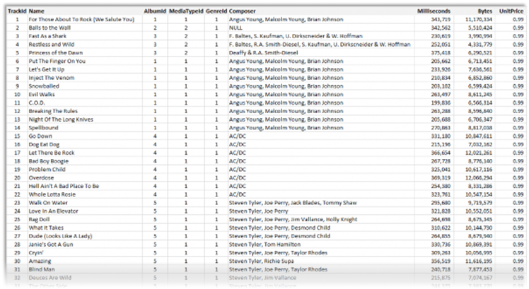
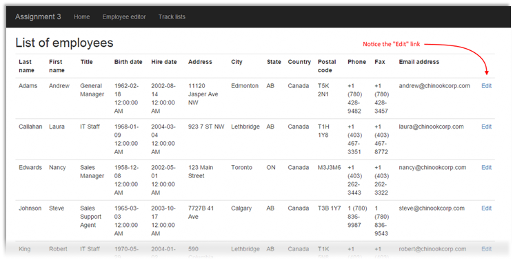
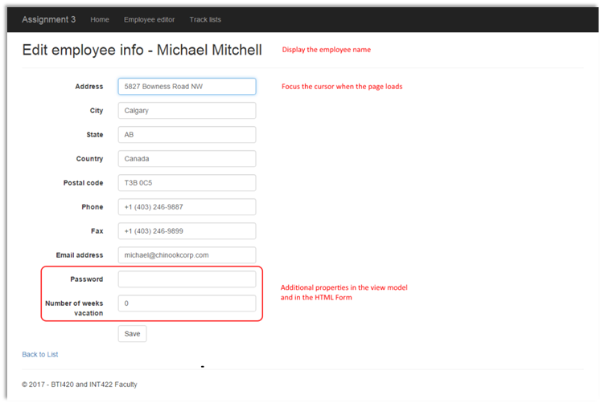
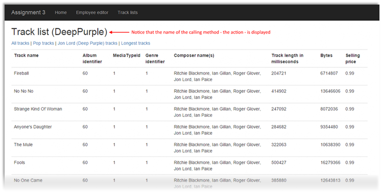

INT422 Assignment 3
Common interaction patterns in a web app that uses a persistent store.
Read/skim all of this document before you begin work.
Due date
Section A: Tuesday, February 13, 2018, 11:59pm
Grade value: 5% of your final course grade
If you wish to submit the lab before the due date and time, you can do that.
Objective(s)
Implement some of the common interaction patterns in a web app that uses a persistent store.
Introduction to the problem to be solved
In the previous assignment, you implemented some of the common interaction patterns. In this assignment, you will implement the remaining patterns.
Specifications overview and work plan
Here’s a brief list of specifications that you must implement:
Here is a brief work plan sequence:
During the class/session, your professor will help you get started and make progress on this assignment.
Every week, in the computer-lab class/session, your teacher will record a grade when you complete a specific small portion of the assignment. We call this “in-class grading“.
The in-class grading will be announced in-class by your professor.
Getting started
Create a new web app, named Assignment3. It MUST use the “Web app project v1” project template.
Build/compile, and run the app, to ensure that you are starting with a working error-free base. Then, as you write code, build/compile frequently.
Customize the app’s appearance
You will customize the appearance all of your web apps and assignments. Never submit an assignment that has the generic auto-generated text content. Make the time to customize the web app’s appearance.
For this assignment, you can defer this customization work until later. Come back to it at any time, and complete it before you submit your work.
Follow the guidance from Assignment 1 to customize the app’s appearance.
Create view models and mappers that cover the use cases
We will be working with the employee and track entities.
❝Tip:
Study the DesignModelClasses.cd class diagram that’s in the Models folder.
It will help you visualize where the Employee and Track entities are located in the design model.
As noted above, these use cases need view models:
Go ahead and write those view model classes.
As with Assignment 2 (and the code examples), you can ignore navigation properties, and the Employee.ReportsTo property in the Employee class.
The Track design model class has an attribute named “Column”. It cannot be used in a view model class, so do NOT include it in your track base view model class.
All view models require suitable data annotations. Study each property, and determine which data annotations should be added. No, we will not tell you which ones to add.
Your “edit existing” use case will permit the editing of the following employee properties:
In addition, your “edit existing” view models will support the editing of some “extra” properties (which, of course, will not be saved – they will exist only in the view model and HTML Form). The extra properties:
As you have recently learned, the typical pattern for “edit existing” is to write two view model classes. One will carry data to the HTML Form, and the other describes the data package that is posted back to the controller method from the browser user.
Mappers
Define the maps that these use cases will need. At this point in time, you should have enough experience to know which maps are required. Ask if you need help.
Add methods to the Manager class that handle the use cases
The class notes and code examples have all you need to implement this part of the work plan.
For the “get all” use cases on the track entity, several methods will be needed, and each will use LINQ query expressions to filter and sort the results. All will return an IEnumerable<TrackBase>, as you would expect. The suggested methods:
TrackGetAll – Typical “get all” method, but you should sort the results (on two properties) in a way that makes sense to you.
TrackGetAllPop – GenreId is 9, sorted ascending by track Name
TrackGetAllDeepPurple – Composer contains “Jon Lord”, sorted ascending by TrackId
TrackGetAllTop100Longest – Sorted descending by Milliseconds; use the Take() method to limit the results to 100 items only
Data for the track entity looks like the following.

Add controllers, with code to work with the manager object
Two controllers are needed, right? One for Employees, and one for Tracks.
For the employee entity,
implement the “get all” use case;
including controller code, and view
The “get all” use case will show the default view when working with employee objects. Each employee will have an “Edit” link at the right side. This view will also be the destination after a successful “edit existing” task.
Here’s an example screen capture.

Implement the “edit existing” use case; including controller code, and view
As noted above, the class notes and code examples have all you need to implement this part of the work plan.
Don’t worry about the “extra” properties that are part of the object that is posted by the browser user from the HTML Form. They will not match any of the design model object properties, so they will be ignored.
The destination after a successful “edit existing” task must be a redirect-to-action to the Index action.
Here’s an example screen capture.

For the track entity, implement some “get all” filtered/sorted use cases; including controller code, and view
In this part of the assignment, you will get some experience with some basic LINQ functionality.
The list-of-tracks view – which by default, is scaffolded to the “Index” view – will host this functionality, and work with some new methods in the controller. This will be done by adding some links – as ActionLink HTML Helpers – near the top of the Index view.
Here’s an example screen capture.

The scaffolded TracksController class has an Index() method. It will call the typical “get all” method, and return in the typical manner.
Think carefully about the other method names, because they will become part of the URL. Don’t include the word “get” in the method name.
Each method will call a method in the manager object. Then, each method will return the Index view, and pass on the fetched collection.
Tip:
If you want the name of the method (action) to display on the view, try the following. In the Index.cshtml view source code, edit the <h2> header element near the top, so that it looks like this:
|
<h2>Track list (@ViewContext.RouteData.GetRequiredString("action"))</h2> |
Modifying the Index.cshtml view
As noted above, you will add some links – as ActionLink HTML Helpers – near the top of the Index view. Each link will call the appropriate action/method in the TracksController.
Make sure that you include a fourth link, which simply will call the Index action/method, to show all tracks.
Testing your work
In a browser, test your work, by doing tasks that fulfill the use cases in the specifications.
Reminder about academic honesty
You must comply with the College’s academic honesty policy. Although you may interact and collaborate with others, you must submit your own work.
Important note
You MUST use the provided “Web app project template v1” project template and AutoMapper instance API for your assignment. Failure to do so will result in a huge penalty for the assignment.
Submitting your work
Here’s how to submit your work, before the due date and time:
1. Locate the folder that holds your solution files. In Solution Explorer, right-click the “Solution” item, and choose “Open Folder in File Explorer”. It has three (or more) items: a Visual Studio Solution file, a folder that has your project’s source code, and a “packages” folder. Go UP one level.
2. Make a copy of the folder. This is the version that you will be uploading.
3. Remove the “packages” folder from the copied folder; also, remove the “bin” and “obj” folders.
4. Compress/zip the copied folder. The zip file SHOULD be about 2MB or less in size. If it isn’t, you haven’t followed the instructions properly.
5. Login to My.Seneca/Blackboard. Open the Web Programming on Windows course area. Click the “Assignments” link on the left-side navigator. Follow the link for this lab. Submit/upload your zip file. The page will accept three submissions, so if you upload, then decide to fix something and upload again, you can do so.